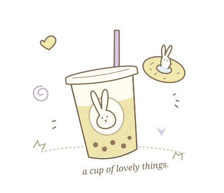

奶茶周记
TEA DIARY
↗ 导出备份
↙ 导入
A LITTLE SIP OF HAPPINESS
又喝奶茶了？
记上，记上。
杯子可以扔，这杯得留名。
＋ 记一杯
Tea & little joys

一杯，是生活的甜。
♡
A LITTLE TEA, A LOT OF JOY
慢慢喝 · 慢慢记
这一周的小快乐
本周
←
回到本周
→
本周喝了
☻
0
杯
每一杯，都值得被记住
解锁品类
0
种
给日常多一点新鲜感
本周心头好
♡
等待第一杯
你的偏爱，会在这里出现
一周打卡
点选一天，看看那天的甜
本周的奶茶清单
查看整周
＋ 再记一杯小快乐
我的口味地图
本周
不赶时间，慢慢喝。
快乐可以是很小的一件事。
✶
记一杯小快乐
✕
今天的快乐，是什么味道？
日期 *
品类 *
自定义品类 *
品牌
饮品名
甜度
未选择
无糖
三分糖
五分糖
七分糖
全糖
冰量
未选择
正常冰
少冰
去冰
常温
热饮
小小备注
删除这杯
保存这杯快乐